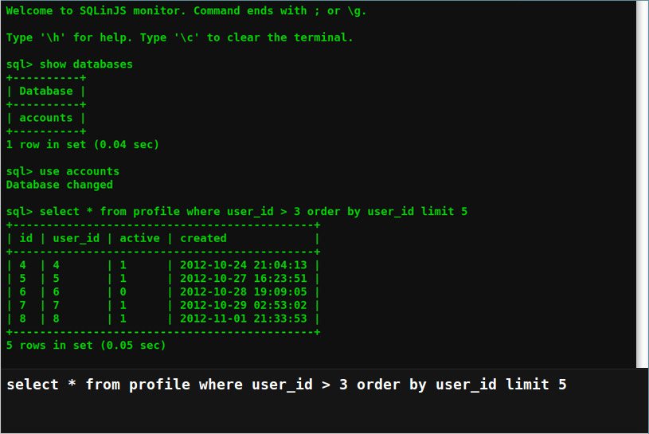

Create web applications with offline capabilities using this simple embeddable DBMS written in JavaScript.
Check out the demo provided with this package.
This package can be easily installed using Bower.
$ bower install sqlinjs
Manual install:
| Filename | Role |
|---|---|
| SQLinJS.min.js | The main script to be included from within your HTML document. |
| SQLinJS.min.css | This style sheet that defines the "look & feel" of the SQL terminal. |
Add the following JavaScript between the <head></head> tags of your HTML document.
<script src="http://ajax.googleapis.com/ajax/libs/jquery/1.8.3/jquery.min.js"></script>
<script src="/path/to/SQLinJS.min.js"></script>
<script>
$(document).ready(function() {
$('body').SQLinJS();
});
</script>
The following methods can be passed to the plugin-in main function after successful initialization. An optional database in the supported format can be provided and will be autoloaded on initialization.
var dbh = $(document).SQLinJS([data] [,handler]); // initialize using database
Launch debug terminal to execute SQL statements using command-line interface. Requires SQLinJS.min.css
dbh.SQLinJS('initTerminal' [,handler]);
Back to Top
Execute SQL statement using the plug-in supported syntax.
dbh.SQLinJS('executeQuery', string [,handler]);
dbh.SQLinJS('executeQuery',"SELECT * FROM user WHERE id > 2 AND name != 'John'"
function(response) {
// do something
}
);
Back to Top
Import an existing database in the supported database format. The database will be autoloaded on successful import.
dbh.SQLinJS('importDatabase', data [,handler]);
dbh.SQLinJS('importDatabase', data,
function(response) {
// do something
}
);
Back to Top
Create a new database.
dbh.SQLinJS('createDatabase', name [,handler]);
dbh.SQLinJS('createDatabase', 'accounts',
function(response) {
if (response === true) {
// do something
}
}
);
Back to Top
Create a new table in an existing database.
dbh.SQLinJS('createTable', name, defs [,handler]);
dbh.SQLinJS('createTable', 'user', { "id": "int(10)", "name": "varchar(10)" },
function(response) {
if (response === true) {
// do something
}
}
);
Back to Top
Delete record(s) from the selected table.
dbh.SQLinJS('deleteFrom', table [,clause] [,handler]);
dbh.SQLinJS('deleteFrom', 'user',
{
conds: ['id > 2',"id != 4"]
},
function(response) {
if (response === true) {
// do something
}
}
);
Back to Top
Returns basic information about the columns of the table.
dbh.SQLinJS('describeTable', name [,handler]);
dbh.SQLinJS('describeTable', 'user',
function(response) {
for (var key in response) {
alert('column=' + key + '; type=' + response[key]);
}
}
);
Back to Top
Delete a database, by name.
dbh.SQLinJS('dropDatabase', name [,handler]);
dbh.SQLinJS('dropDatabase', 'accounts',
function(response) {
if (response === true) {
// do something
}
}
);
Back to Top
Delete a table, by name, from an existing database.
dbh.SQLinJS('dropTable', name [,handler]);
dbh.SQLinJS('dropTable', 'user',
function(response) {
if (response === true) {
// do something
}
}
);
Back to Top
Insert a new record into the selected table.
dbh.SQLinJS('insertInto', table, vals [,handler]);
dbh.SQLinJS('insertInto', 'user',
[
{ id: '1', name: 'Jerry' },
{ id: '2', name: 'Alice' },
{ id: '3', name: 'Mable' }
],
function(response) {
if (response === true) {
// do something
}
}
);
Back to Top
Select column(s) data from the selected table.
dbh.SQLinJS('selectFrom', table, cols [,clause] [,handler]);
dbh.SQLinJS('selectFrom', 'user', ['id', 'name'],
{
conds: ['id > 2',"name != 'John'"],
order_by: 'id',
sort: 'desc',
limit: 3
},
function(response) {
for (var i = 0; i < response.length; i++) {
for (var key in response[i]) {
alert('id=' + key.id + '; name=' + key.name);
}
}
}
);
Back to Top
Return an array of database names.
dbh.SQLinJS('showDatabases' [,handler]);
dbh.SQLinJS('showDatabases',
function(response) {
for (var i = 0; i <= response.length; i++) {
for (var key in response[i]) {
alert(response[key]);
}
}
}
);
Back to Top
Return an array of table names in the active database.
dbh.SQLinJS('showTables' [,handler]);
dbh.SQLinJS('showTables',
function(response) {
for (var i = 0; i <= response.length; i++) {
for (var key in response[i]) {
alert(response[key]);
}
}
}
);
Back to Top
Select column data from the selected table based on conditional arguments.
dbh.SQLinJS('updateSet', table, cols [,clause] [,callback]);
dbh.SQLinJS('updateSet', 'user', ["name = 'Fred'"],
{
conds: ['id > 2',"name != 'John'"]
},
function(response) {
if (response === true) {
// do something
}
}
);
Back to Top
Load the selected database to access.
dbh.SQLinJS('useDatabase', name);
dbh.SQLinJS('useDatabase', 'accounts',
function(response) {
if (response === true) {
// do something
}
}
);
Back to Top
HTML5 sessionStorage is used, by default. In cases where this is not supported, jQuery jQuery.data is used.
Back to TopIn order to avoid creating a complex SQL parser I have provide limited support the following functions.
CREATE DATABASE db_nameBack to Top
CREATE TABLE tbl_name [create_specification]
Currently supported data types are INT, CHAR, VARCHAR. Furthermore, the INT type works similar to a zerofill (character count/length) when an argument is present. This is due to limitations in the ability to determine the required storage and range for each integer type across web browsers and the various system architectures.
Back to TopDELETE FROM tbl_name [WHERE where_condition] [ORDER BY col_name [ASC | DESC]]Back to Top
DESCRIBE tbl_nameBack to Top
DROP DATABASE db_nameBack to Top
DROP TABLE tbl_nameBack to Top
INSERT INTO [(col_name, ...)] VALUES (col_value, ...)Back to Top
SELECT col_name, ... [FROM tbl_name [WHERE where_condition] [ORDER BY col_name [ASC | DESC]]]Back to Top
SHOW DATABASESBack to Top
SHOW TABLESBack to Top
UPDATE tbl_name SET col_name1=expr1 [,col_name2=expr2] ... [WHERE where_condition] [ORDER BY col_name [ASC | DESC]]Back to Top
USE db_nameBack to Top
In order to support older web browsers, specifically Internet Explorer 7, this package requires jQuery 1.8.3. Furthermore, jQuery has recently dropped support for IE8 in version 2, so if there is no compelling reason to support these two web browsers it is recommended that you upgrade to the latest version of jQuery. If you still need to support IE8 please upgrade to jQuery 1.9+.
This package has been preconfigured to support QUnit headless testing using Travis-CI. If you plan on using another integration tool you will have to create a custom project that combines the use of QUnit and PhantomJS plugins. You can manually run these tests in your web browser by clicking here.
I have included with this package a packed version (13 kB) and developers version (unpacked 46 kB)
You can always find the latest updates within this projects repository.
This projects repository is currently hosted on Github
https://github.com/nuxy/SQLinJS
For feedback, bug reports, or other comments, feel free to contact me at: devel at mbrooks dot info
This package is distributed in the hope that it will be useful, but without any warranty; without even the implied warranty of merchantability or fitness for a particular purpose.
SQLinJS is provided under the terms of the MIT license.
SQLinJS ©2012-2015 Marc S. Brooks